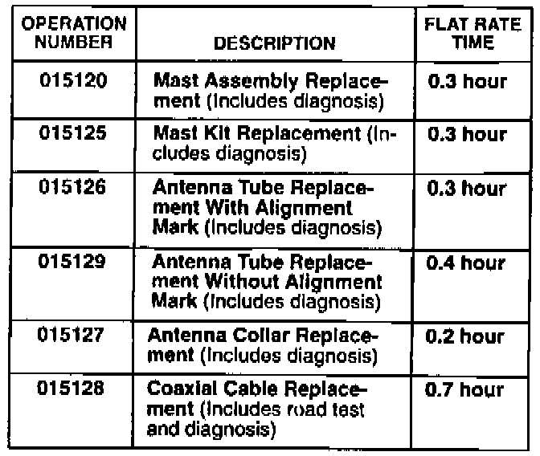

Warranty Claim Information
WARRANTY CLAIM INFORMATIONIn warranty:
The normal warranty applies.

Out of warranty:
Any repair performed after warranty expiration may be eligible for goodwill consideration by the District Technical Manager or your Zone Office. You must request consideration, and get a decision, before starting work.
Failed P/N: Use the part number of the part that
failed.
Contention code: F99
Defect code: Select the appropriate defect code:
018 - Broken or chipped, in two or more pieces
030 - Binding or sticking
068 - Open or burned-out circuit